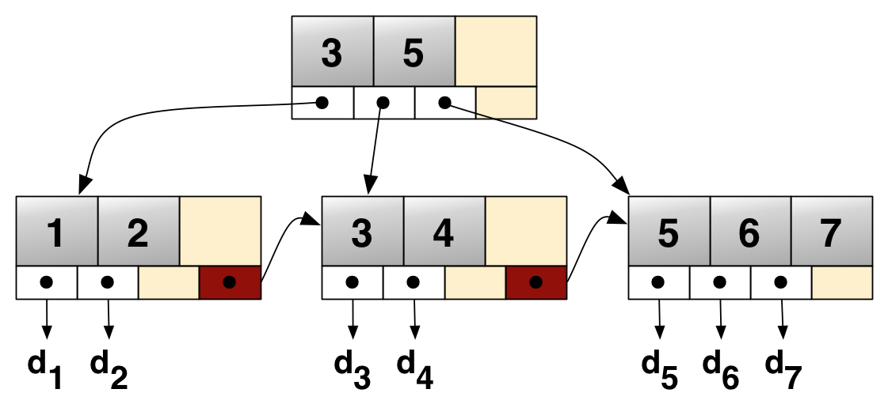
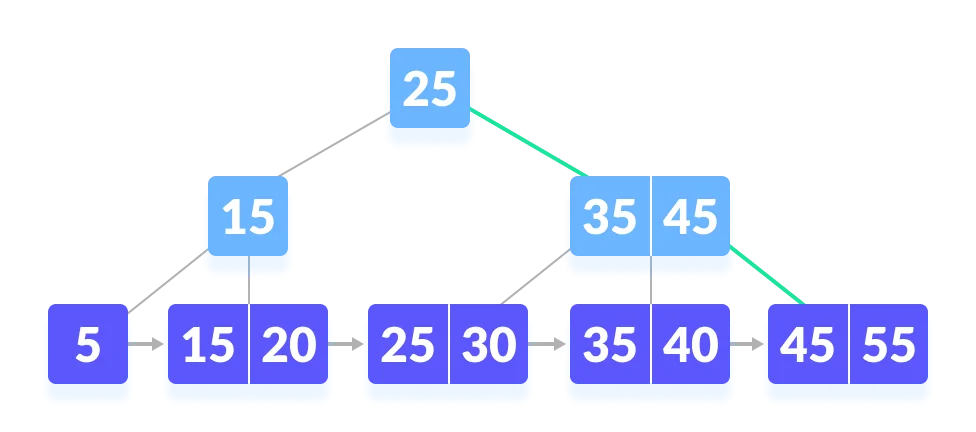
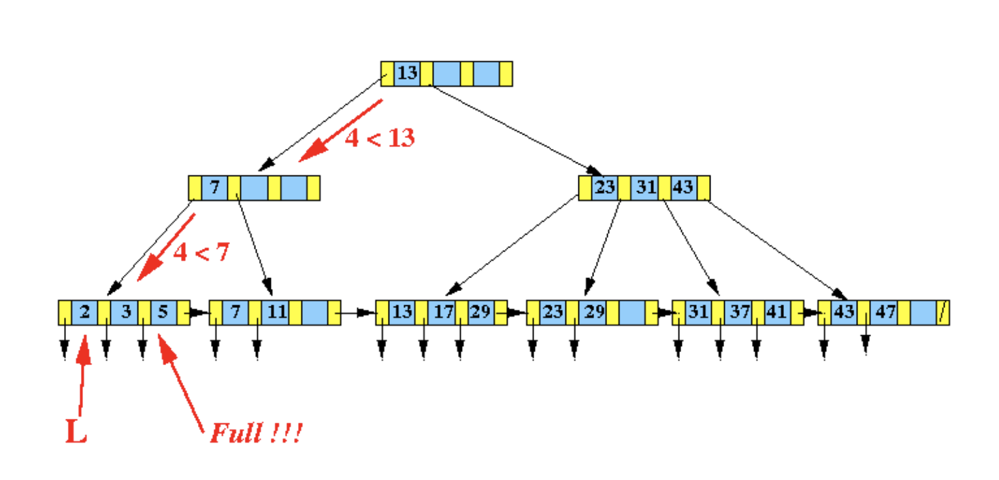

B+ 树
引入
B+ 树是 B 树 的一个升级，它比 B 树更适合实际应用中操作系统的文件索引和数据库索引。目前现代关系型数据库最广泛的支持索引结构就是 B+ 树。
B+ 树是一种多叉排序树，即每个节点通常有多个孩子。一棵 B+ 树包含根节点、内部节点和叶子节点。根节点可能是一个叶子节点，也可能是一个包含两个或两个以上孩子节点的节点。
B+ 树的特点是能够保持数据稳定有序，其插入与修改拥有较稳定的对数时间复杂度。B+ 树元素自底向上插入，这与二叉树恰好相反。
首先介绍一棵
- 有
棵子树的节点中含有 个关键字（即将区间分为 个子区间，每个子区间对应一棵子树）。 - 所有叶子节点中包含了全部关键字的信息，及指向含这些关键字记录的指针，且叶子节点本身依关键字的大小自小而大顺序链接。
- 所有的非叶子节点可以看成是索引部分，节点中仅含有其子树（根节点）中的最大（或最小）关键字。
- 除根节点外，其他所有节点中所含关键字的个数最少有
（注意：B 树中除根以外的所有非叶子节点至少有 棵子树）。
同时，B+ 树为了方便范围查询，叶子节点之间还用指针串联起来。
以下是一棵 B+ 树的典型结构：

B+ 树相比于 B 树的优势
由于索引节点上只有索引而没有数据，所以索引节点上能存储比 B 树更多的索引，这样树的高度就会更矮。树的高度越矮，磁盘寻道的次数就会越少。
因为数据都集中在叶子节点，而所有叶子节点的高度相同，那么可以在叶子节点中增加前后指针，指向同一个父节点的相邻兄弟节点，这样可以更好地支持查询一个值的前驱或后继，使连续访问更容易实现。
比如这样的 SQL 语句：select * from tbl where t > 10，如果使用 B+ 树存储数据的话，可以首先定位到数据为 10 的节点，再沿着它的 next 指针一路找到所有在该叶子节点右边的叶子节点，返回这些节点包含的数据。
而如果使用 B 树结构，由于数据既可以存储在内部节点也可以存储在叶子节点，连续访问的实现会更加繁琐（需要在树的内部结构中进行移动）。
过程
与 B 树 类似，B+ 树的基本操作有查找，遍历，插入，删除。
查找
B+ 树的查找过程和 B 树类似。假设需要查找的键值是
一个实例：在如下这棵 B+ 树上查找 45。

先和根节点比较

因为根节点的键值比 45 要小，所以去往根节点的右子树查找

因为 45 比 35 大，所以要与右边的索引相比

右侧的索引也为 45，所以要去往该节点的右子树继续查找

然后就可以找到 45
需要注意的是，在查找时，若非叶子节点上的关键字等于给定值，并不终止，而是继续向下直到叶子节点。因此，在 B+ 树中，不管查找成功与否，每次查找都是走了一条从根到叶子节点的路径。其余同 B 树的查找类似。
查找一个键的代码如下：
实现
遍历
B+ 树只在叶子节点的层级上就可以实现整棵树的遍历。从根节点出发一路搜索到最左端的叶子节点之后即可根据指针遍历。
插入
B+ 树的插入算法与 B 树的相近：
- 若为空树，创建一个叶子节点，然后将记录插入其中，此时这个叶子节点也是根节点，插入操作结束。
- 针对叶子类型节点：根据关键字找到叶子节点，向这个叶子节点插入记录。插入后，若当前节点关键字的个数小于
，则插入结束。否则将这个叶子节点分裂成左右两个叶子节点，左叶子节点包含前 个记录，右节点包含剩下的记录，将第 个记录的关键字进位到父节点中（父节点一定是索引类型节点），进位到父节点的关键字左孩子指针向左节点，右孩子指针向右节点。将当前节点的指针指向父节点，然后执行第 3 步。 - 针对索引类型节点（内部节点）：若当前节点关键字的个数小于等于
，则插入结束。否则，将这个索引类型节点分裂成两个索引节点，左索引节点包含前 个 key，右节点包含 个 key，将第 个关键字进位到父节点中，进位到父节点的关键字左孩子指向左节点，进位到父节点的关键字右孩子指向右节点。将当前节点的指针指向父节点，然后重复这一步。
比如在下图的 B+ 树中，插入新的数据 10：

由于插入节点
而如下图的 B+ 树中，插入数据 4：

由于所在节点

- 大于左子树的最大值；
- 小于等于右子树的最小值。
综上，需要在父节点中新增索引 4 和两个指向新节点的指针。
更多的例子可以参考演示网站 BPlustree
插入一个键的代码如下：
实现
void BPTree::insert(int x) {
if (root == NULL) {
root = new Node;
root->key[0] = x;
root->IS_LEAF = true;
root->size = 1;
root->parent = NULL;
} else {
Node* cursor = root;
Node* parent;
while (cursor->IS_LEAF == false) {
parent = cursor;
for (int i = 0; i < cursor->size; i++) {
if (x < cursor->key[i]) {
cursor = cursor->ptr[i];
break;
}
if (i == cursor->size - 1) {
cursor = cursor->ptr[i + 1];
break;
}
}
}
if (cursor->size < MAX) {
insertVal(x, cursor);
cursor->parent = parent;
cursor->ptr[cursor->size] = cursor->ptr[cursor->size - 1];
cursor->ptr[cursor->size - 1] = NULL;
} else
split(x, parent, cursor);
}
}
void BPTree::split(int x, Node* parent, Node* cursor) {
Node* LLeaf = new Node;
Node* RLeaf = new Node;
insertVal(x, cursor);
LLeaf->IS_LEAF = RLeaf->IS_LEAF = true;
LLeaf->size = (MAX + 1) / 2;
RLeaf->size = (MAX + 1) - (MAX + 1) / 2;
for (int i = 0; i < MAX + 1; i++) LLeaf->ptr[i] = cursor->ptr[i];
LLeaf->ptr[LLeaf->size] = RLeaf;
RLeaf->ptr[RLeaf->size] = LLeaf->ptr[MAX];
LLeaf->ptr[MAX] = NULL;
for (int i = 0; i < LLeaf->size; i++) {
LLeaf->key[i] = cursor->key[i];
}
for (int i = 0, j = LLeaf->size; i < RLeaf->size; i++, j++) {
RLeaf->key[i] = cursor->key[j];
}
if (cursor == root) {
Node* newRoot = new Node;
newRoot->key[0] = RLeaf->key[0];
newRoot->ptr[0] = LLeaf;
newRoot->ptr[1] = RLeaf;
newRoot->IS_LEAF = false;
newRoot->size = 1;
root = newRoot;
LLeaf->parent = RLeaf->parent = newRoot;
} else {
insertInternal(RLeaf->key[0], parent, LLeaf, RLeaf);
}
}
void BPTree::insertInternal(int x, Node* cursor, Node* LLeaf, Node* RRLeaf) {
if (cursor->size < MAX) {
auto i = insertVal(x, cursor);
for (int j = cursor->size; j > i + 1; j--) {
cursor->ptr[j] = cursor->ptr[j - 1];
}
cursor->ptr[i] = LLeaf;
cursor->ptr[i + 1] = RRLeaf;
}
else {
Node* newLchild = new Node;
Node* newRchild = new Node;
Node* virtualPtr[MAX + 2];
for (int i = 0; i < MAX + 1; i++) {
virtualPtr[i] = cursor->ptr[i];
}
int i = insertVal(x, cursor);
for (int j = MAX + 2; j > i + 1; j--) {
virtualPtr[j] = virtualPtr[j - 1];
}
virtualPtr[i] = LLeaf;
virtualPtr[i + 1] = RRLeaf;
newLchild->IS_LEAF = newRchild->IS_LEAF = false;
// 这里和叶子节点有区别
newLchild->size = (MAX + 1) / 2;
newRchild->size = MAX - (MAX + 1) / 2;
for (int i = 0; i < newLchild->size; i++) {
newLchild->key[i] = cursor->key[i];
}
for (int i = 0, j = newLchild->size + 1; i < newRchild->size; i++, j++) {
newRchild->key[i] = cursor->key[j];
}
for (int i = 0; i < LLeaf->size + 1; i++) {
newLchild->ptr[i] = virtualPtr[i];
}
for (int i = 0, j = LLeaf->size + 1; i < RRLeaf->size + 1; i++, j++) {
newRchild->ptr[i] = virtualPtr[j];
}
if (cursor == root) {
Node* newRoot = new Node;
newRoot->key[0] = cursor->key[newLchild->size];
newRoot->ptr[0] = newLchild;
newRoot->ptr[1] = newRchild;
newRoot->IS_LEAF = false;
newRoot->size = 1;
root = newRoot;
newLchild->parent = newRchild->parent = newRoot;
} else {
insertInternal(cursor->key[newLchild->size], cursor->parent, newLchild,
newRchild);
}
}
}
删除
B+ 树的删除也仅在叶子节点中进行，当叶子节点中的最大关键字被删除时，其在非叶子节点中的值可以作为一个分界关键字存在。若因删除而使节点中关键字的个数少于
具体步骤如下：
- 首先查询到键值所在的叶子节点，删除该叶子节点的数据。
- 如果删除叶子节点之后的数据数量，满足 B+ 树的平衡条件，则直接返回。
- 否则，就需要做平衡操作：如果该叶子节点的左右兄弟节点的数据量可以借用，就借用过来满足平衡条件。否则，就与相邻的兄弟节点合并成一个新的子节点了。
在上面平衡操作中，如果是进行了合并操作，就需要向上修正父节点的指针：删除被合并节点的键值以及指针。
由于做了删除操作，可能父节点也会不平衡，那么就按照前面的步骤也对父节点进行重新平衡操作，这样一直到某个节点平衡为止。
可以参考 B 树 中的删除章节。
实现
// Deletion operation on a B+ tree in C++
#include <climits>
#include <fstream>
#include <iostream>
#include <sstream>
using namespace std;
int MAX = 3;
class BPTree;
class Node {
bool IS_LEAF;
int *key, size;
Node **ptr;
friend class BPTree;
public:
Node();
};
class BPTree {
Node *root;
void insertInternal(int, Node *, Node *);
void removeInternal(int, Node *, Node *);
Node *findParent(Node *, Node *);
public:
BPTree();
void search(int);
void insert(int);
void remove(int);
void display(Node *);
Node *getRoot();
};
Node::Node() {
key = new int[MAX];
ptr = new Node *[MAX + 1];
}
BPTree::BPTree() { root = NULL; }
void BPTree::insert(int x) {
if (root == NULL) {
root = new Node;
root->key[0] = x;
root->IS_LEAF = true;
root->size = 1;
} else {
Node *cursor = root;
Node *parent;
while (!cursor->IS_LEAF) {
parent = cursor;
for (int i = 0; i < cursor->size; i++) {
if (x < cursor->key[i]) {
cursor = cursor->ptr[i];
break;
}
if (i == cursor->size - 1) {
cursor = cursor->ptr[i + 1];
break;
}
}
}
if (cursor->size < MAX) {
int i = 0;
while (x > cursor->key[i] && i < cursor->size) i++;
for (int j = cursor->size; j > i; j--) {
cursor->key[j] = cursor->key[j - 1];
}
cursor->key[i] = x;
cursor->size++;
cursor->ptr[cursor->size] = cursor->ptr[cursor->size - 1];
cursor->ptr[cursor->size - 1] = NULL;
} else {
Node *newLeaf = new Node;
int virtualNode[MAX + 1];
for (int i = 0; i < MAX; i++) {
virtualNode[i] = cursor->key[i];
}
int i = 0, j;
while (x > virtualNode[i] && i < MAX) i++;
for (int j = MAX + 1; j > i; j--) {
virtualNode[j] = virtualNode[j - 1];
}
virtualNode[i] = x;
newLeaf->IS_LEAF = true;
cursor->size = (MAX + 1) / 2;
newLeaf->size = MAX + 1 - (MAX + 1) / 2;
cursor->ptr[cursor->size] = newLeaf;
newLeaf->ptr[newLeaf->size] = cursor->ptr[MAX];
cursor->ptr[MAX] = NULL;
for (i = 0; i < cursor->size; i++) {
cursor->key[i] = virtualNode[i];
}
for (i = 0, j = cursor->size; i < newLeaf->size; i++, j++) {
newLeaf->key[i] = virtualNode[j];
}
if (cursor == root) {
Node *newRoot = new Node;
newRoot->key[0] = newLeaf->key[0];
newRoot->ptr[0] = cursor;
newRoot->ptr[1] = newLeaf;
newRoot->IS_LEAF = false;
newRoot->size = 1;
root = newRoot;
} else {
insertInternal(newLeaf->key[0], parent, newLeaf);
}
}
}
}
void BPTree::insertInternal(int x, Node *cursor, Node *child) {
if (cursor->size < MAX) {
int i = 0;
while (x > cursor->key[i] && i < cursor->size) i++;
for (int j = cursor->size; j > i; j--) {
cursor->key[j] = cursor->key[j - 1];
}
for (int j = cursor->size + 1; j > i + 1; j--) {
cursor->ptr[j] = cursor->ptr[j - 1];
}
cursor->key[i] = x;
cursor->size++;
cursor->ptr[i + 1] = child;
} else {
Node *newInternal = new Node;
int virtualKey[MAX + 1];
Node *virtualPtr[MAX + 2];
for (int i = 0; i < MAX; i++) {
virtualKey[i] = cursor->key[i];
}
for (int i = 0; i < MAX + 1; i++) {
virtualPtr[i] = cursor->ptr[i];
}
int i = 0, j;
while (x > virtualKey[i] && i < MAX) i++;
for (int j = MAX + 1; j > i; j--) {
virtualKey[j] = virtualKey[j - 1];
}
virtualKey[i] = x;
for (int j = MAX + 2; j > i + 1; j--) {
virtualPtr[j] = virtualPtr[j - 1];
}
virtualPtr[i + 1] = child;
newInternal->IS_LEAF = false;
cursor->size = (MAX + 1) / 2;
newInternal->size = MAX - (MAX + 1) / 2;
for (i = 0, j = cursor->size + 1; i < newInternal->size; i++, j++) {
newInternal->key[i] = virtualKey[j];
}
for (i = 0, j = cursor->size + 1; i < newInternal->size + 1; i++, j++) {
newInternal->ptr[i] = virtualPtr[j];
}
if (cursor == root) {
Node *newRoot = new Node;
newRoot->key[0] = cursor->key[cursor->size];
newRoot->ptr[0] = cursor;
newRoot->ptr[1] = newInternal;
newRoot->IS_LEAF = false;
newRoot->size = 1;
root = newRoot;
} else {
insertInternal(cursor->key[cursor->size], findParent(root, cursor),
newInternal);
}
}
}
Node *BPTree::findParent(Node *cursor, Node *child) {
Node *parent;
if (cursor->IS_LEAF || (cursor->ptr[0])->IS_LEAF) {
return NULL;
}
for (int i = 0; i < cursor->size + 1; i++) {
if (cursor->ptr[i] == child) {
parent = cursor;
return parent;
} else {
parent = findParent(cursor->ptr[i], child);
if (parent != NULL) return parent;
}
}
return parent;
}
void BPTree::remove(int x) {
if (root == NULL) {
cout << "Tree empty\n";
} else {
Node *cursor = root;
Node *parent;
int leftSibling, rightSibling;
while (!cursor->IS_LEAF) {
for (int i = 0; i < cursor->size; i++) {
parent = cursor;
leftSibling = i - 1;
rightSibling = i + 1;
if (x < cursor->key[i]) {
cursor = cursor->ptr[i];
break;
}
if (i == cursor->size - 1) {
leftSibling = i;
rightSibling = i + 2;
cursor = cursor->ptr[i + 1];
break;
}
}
}
bool found = false;
int pos;
for (pos = 0; pos < cursor->size; pos++) {
if (cursor->key[pos] == x) {
found = true;
break;
}
}
if (!found) {
cout << "Not found\n";
return;
}
for (int i = pos; i < cursor->size; i++) {
cursor->key[i] = cursor->key[i + 1];
}
cursor->size--;
if (cursor == root) {
for (int i = 0; i < MAX + 1; i++) {
cursor->ptr[i] = NULL;
}
if (cursor->size == 0) {
cout << "Tree died\n";
delete[] cursor->key;
delete[] cursor->ptr;
delete cursor;
root = NULL;
}
return;
}
cursor->ptr[cursor->size] = cursor->ptr[cursor->size + 1];
cursor->ptr[cursor->size + 1] = NULL;
if (cursor->size >= (MAX + 1) / 2) {
return;
}
if (leftSibling >= 0) {
Node *leftNode = parent->ptr[leftSibling];
if (leftNode->size >= (MAX + 1) / 2 + 1) {
for (int i = cursor->size; i > 0; i--) {
cursor->key[i] = cursor->key[i - 1];
}
cursor->size++;
cursor->ptr[cursor->size] = cursor->ptr[cursor->size - 1];
cursor->ptr[cursor->size - 1] = NULL;
cursor->key[0] = leftNode->key[leftNode->size - 1];
leftNode->size--;
leftNode->ptr[leftNode->size] = cursor;
leftNode->ptr[leftNode->size + 1] = NULL;
parent->key[leftSibling] = cursor->key[0];
return;
}
}
if (rightSibling <= parent->size) {
Node *rightNode = parent->ptr[rightSibling];
if (rightNode->size >= (MAX + 1) / 2 + 1) {
cursor->size++;
cursor->ptr[cursor->size] = cursor->ptr[cursor->size - 1];
cursor->ptr[cursor->size - 1] = NULL;
cursor->key[cursor->size - 1] = rightNode->key[0];
rightNode->size--;
rightNode->ptr[rightNode->size] = rightNode->ptr[rightNode->size + 1];
rightNode->ptr[rightNode->size + 1] = NULL;
for (int i = 0; i < rightNode->size; i++) {
rightNode->key[i] = rightNode->key[i + 1];
}
parent->key[rightSibling - 1] = rightNode->key[0];
return;
}
}
if (leftSibling >= 0) {
Node *leftNode = parent->ptr[leftSibling];
for (int i = leftNode->size, j = 0; j < cursor->size; i++, j++) {
leftNode->key[i] = cursor->key[j];
}
leftNode->ptr[leftNode->size] = NULL;
leftNode->size += cursor->size;
leftNode->ptr[leftNode->size] = cursor->ptr[cursor->size];
removeInternal(parent->key[leftSibling], parent, cursor);
delete[] cursor->key;
delete[] cursor->ptr;
delete cursor;
} else if (rightSibling <= parent->size) {
Node *rightNode = parent->ptr[rightSibling];
for (int i = cursor->size, j = 0; j < rightNode->size; i++, j++) {
cursor->key[i] = rightNode->key[j];
}
cursor->ptr[cursor->size] = NULL;
cursor->size += rightNode->size;
cursor->ptr[cursor->size] = rightNode->ptr[rightNode->size];
cout << "Merging two leaf nodes\n";
removeInternal(parent->key[rightSibling - 1], parent, rightNode);
delete[] rightNode->key;
delete[] rightNode->ptr;
delete rightNode;
}
}
}
void BPTree::removeInternal(int x, Node *cursor, Node *child) {
if (cursor == root) {
if (cursor->size == 1) {
if (cursor->ptr[1] == child) {
delete[] child->key;
delete[] child->ptr;
delete child;
root = cursor->ptr[0];
delete[] cursor->key;
delete[] cursor->ptr;
delete cursor;
cout << "Changed root node\n";
return;
} else if (cursor->ptr[0] == child) {
delete[] child->key;
delete[] child->ptr;
delete child;
root = cursor->ptr[1];
delete[] cursor->key;
delete[] cursor->ptr;
delete cursor;
cout << "Changed root node\n";
return;
}
}
}
int pos;
for (pos = 0; pos < cursor->size; pos++) {
if (cursor->key[pos] == x) {
break;
}
}
for (int i = pos; i < cursor->size; i++) {
cursor->key[i] = cursor->key[i + 1];
}
for (pos = 0; pos < cursor->size + 1; pos++) {
if (cursor->ptr[pos] == child) {
break;
}
}
for (int i = pos; i < cursor->size + 1; i++) {
cursor->ptr[i] = cursor->ptr[i + 1];
}
cursor->size--;
if (cursor->size >= (MAX + 1) / 2 - 1) {
return;
}
if (cursor == root) return;
Node *parent = findParent(root, cursor);
int leftSibling, rightSibling;
for (pos = 0; pos < parent->size + 1; pos++) {
if (parent->ptr[pos] == cursor) {
leftSibling = pos - 1;
rightSibling = pos + 1;
break;
}
}
if (leftSibling >= 0) {
Node *leftNode = parent->ptr[leftSibling];
if (leftNode->size >= (MAX + 1) / 2) {
for (int i = cursor->size; i > 0; i--) {
cursor->key[i] = cursor->key[i - 1];
}
cursor->key[0] = parent->key[leftSibling];
parent->key[leftSibling] = leftNode->key[leftNode->size - 1];
for (int i = cursor->size + 1; i > 0; i--) {
cursor->ptr[i] = cursor->ptr[i - 1];
}
cursor->ptr[0] = leftNode->ptr[leftNode->size];
cursor->size++;
leftNode->size--;
return;
}
}
if (rightSibling <= parent->size) {
Node *rightNode = parent->ptr[rightSibling];
if (rightNode->size >= (MAX + 1) / 2) {
cursor->key[cursor->size] = parent->key[pos];
parent->key[pos] = rightNode->key[0];
for (int i = 0; i < rightNode->size - 1; i++) {
rightNode->key[i] = rightNode->key[i + 1];
}
cursor->ptr[cursor->size + 1] = rightNode->ptr[0];
for (int i = 0; i < rightNode->size; ++i) {
rightNode->ptr[i] = rightNode->ptr[i + 1];
}
cursor->size++;
rightNode->size--;
return;
}
}
if (leftSibling >= 0) {
Node *leftNode = parent->ptr[leftSibling];
leftNode->key[leftNode->size] = parent->key[leftSibling];
for (int i = leftNode->size + 1, j = 0; j < cursor->size; i++, j++) {
leftNode->key[i] = cursor->key[j];
}
for (int i = leftNode->size + 1, j = 0; j < cursor->size + 1; i++, j++) {
leftNode->ptr[i] = cursor->ptr[j];
cursor->ptr[j] = NULL;
}
leftNode->size += cursor->size + 1;
cursor->size = 0;
removeInternal(parent->key[leftSibling], parent, cursor);
} else if (rightSibling <= parent->size) {
Node *rightNode = parent->ptr[rightSibling];
cursor->key[cursor->size] = parent->key[rightSibling - 1];
for (int i = cursor->size + 1, j = 0; j < rightNode->size; i++, j++) {
cursor->key[i] = rightNode->key[j];
}
for (int i = cursor->size + 1, j = 0; j < rightNode->size + 1; i++, j++) {
cursor->ptr[i] = rightNode->ptr[j];
rightNode->ptr[j] = NULL;
}
cursor->size += rightNode->size + 1;
rightNode->size = 0;
removeInternal(parent->key[rightSibling - 1], parent, rightNode);
}
}
void BPTree::display(Node *cursor) {
if (cursor != NULL) {
for (int i = 0; i < cursor->size; i++) {
cout << cursor->key[i] << " ";
}
cout << "\n";
if (!cursor->IS_LEAF) {
for (int i = 0; i < cursor->size + 1; i++) {
display(cursor->ptr[i]);
}
}
}
}
Node *BPTree::getRoot() { return root; }
int main() {
BPTree node;
node.insert(5);
node.insert(15);
node.insert(25);
node.insert(35);
node.insert(45);
node.display(node.getRoot());
node.remove(15);
node.display(node.getRoot());
}
参考资料
创建日期: 2022年9月5日